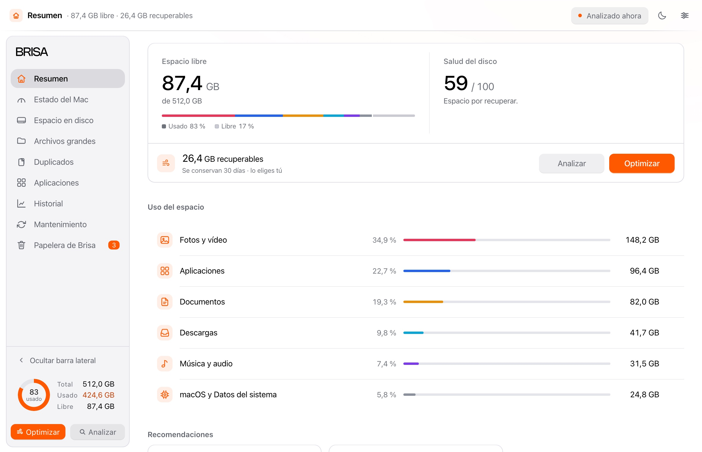

Instálala en tres pasos.
Brisa se reparte a mano, así que macOS pide una confirmación la primera vez. Tres pasos y menos de dos minutos.
Se concede para uso personal. Descargarla y usarla significa aceptar la Licencia.

Mírala antes de instalarla.
El mismo motor dentro del navegador, con la interfaz que vas a descargar, datos de ejemplo y sin tocar tu disco.
Sin dejar rastro.
Brisa guarda sus datos en una sola carpeta. Este comando retira el mantenimiento automático y todos los datos locales. Después, borra la app de «Aplicaciones».
/Applications/Brisa.app/Contents/MacOS/Brisa --reset
Se ejecuta en la Terminal, sin permisos de administrador y sin tocar nada más.
-
Instala Brisa.
Abre el instalador y arrastra Brisa a la carpeta «Aplicaciones», que está al lado.
-
Ábrela la primera vez.
macOS mostrará un aviso parecido a «Apple no ha podido verificar que “Brisa” no contenga software malicioso». No significa que Brisa tenga nada malo.
Para abrirla esta primera vez, sigue estos pasos.
- Abre el menú Apple y entra en «Ajustes del Sistema».
- Ve a «Privacidad y seguridad» y baja hasta el apartado «Seguridad».
- Busca el aviso sobre Brisa y pulsa «Abrir», y después «Abrir igualmente».
- Escribe la contraseña de tu Mac.
Solo esta vez. Después se abre con doble clic, como cualquier app.
En versiones anteriores de macOS, haz clic derecho sobre Brisa en Aplicaciones y elige «Abrir».
-
Ya dentro.
Brisa analiza tu Mac nada más abrirse. Al terminar te ofrece Acceso total al disco, para medir las carpetas protegidas. Puedes decir que no.
En cuanto lo concedas, Brisa vuelve a analizar.
El aviso se queda en «Privacidad y seguridad» alrededor de una hora. Si ya no está, vuelve a intentar abrir Brisa y repite el paso.